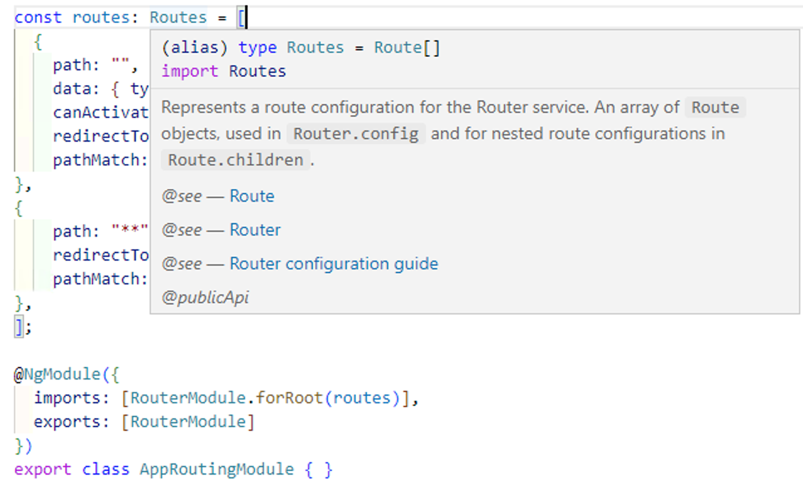

Angular路由
什么是路由
路由允许您从应用程序的一部分移动到另一部分，或者从一个视图移动到另一个视图。
在Angular中，路由由Angular路由器模块处理。
路由器是Angular中的一个独立模块。它在@angular/router包中。Angular Router提供了应用程序视图中导航所需的服务和指令。
使用Angular Router，您可以
- 通过在地址栏中键入URL导航到特定视图
- 将可选参数（查询参数）传递到视图
- 将可单击元素绑定到视图，并在用户执行应用程序任务时加载视图
- 处理浏览器的后退和前进按钮
- 允许您动态加载视图
- 使用路由保护程序保护路由不受未经授权的用户的攻击
Angular路由组件
Router
Angular Router 是服务(service)（Angular Router API），它允许用户在执行应用程序任务时从一个组件导航到下一个组件，如单击菜单链接和按钮，或单击浏览器上的后退/前进按钮。我们可以访问router对象，并使用其方法（如navigate（）或navigateByUrl（））来导航到路由.
Route
当用户单击链接或将URL粘贴到浏览器地址栏时，Route 告诉Angular Router要显示哪个视图。每个Route都由一个路径和映射到的组件组成。Router对象使用Route解析并构建最终的URL.

Routes
Routes是应用程序支持的Route对象的数组
RouterOutlet
RouterOutlet是一个用作占位符的指令（＜router-outlet＞），路由器应在其中显示视图
选择器
router-outlet
模板变量参考手册
outlet #myTemplateVar=”outlet”
每当新组件实例化之后，路由出口就会发出一个激活事件；在销毁时则发出取消激活的事件。
1 | <router-outlet |
每个出口可以具有唯一的名称，该 name 由可选的 name 属性确定。该名称不能动态设置或更改。如果未设置，则默认值为 “primary”。
1 | <router-outlet></router-outlet> |
1 | {path: <base-path>, component: <component>, outlet: <target_outlet_name>} |
使用命名的出口和辅助路由，你可以在同一 RouterLink 指令中定位多个出口。
路由器在导航树中跟踪每个命名出口的单独分支，并在 URL 中生成该树的表示形式。辅助路由的 URL 使用以下语法同时指定主要路由和辅助路由：
1 | http://base-path/primary-route-path(outlet-name:route-path) |
RouterLink
RouterLink是一个将HTML元素绑定到Route的指令。单击绑定到RouterLink的HTML元素，将导航到Route。RouterLink可能包含要传递给路由组件的参数。
给定路由配置
1 | [{ path: 'user/:name', component: UserCmp }] |
，以下内容将创建一个到该路由的静态链接：
1 | <a routerLink="/user/bob">link to user component</a> |
你也可以使用动态值来生成链接。对于动态链接，请传递路径段数组，然后传递每个段的参数。比如，['/team', teamId, 'user', userName, {details: true}] 生成到 /team/11/user/bob;details=true。
多个静态段可以合并为一个词，并与动态段组合。比如，['/team/11/user', userName, {details: true}]
你提供给链接的输入将被视为当前 URL 的增量。比如，假设当前 URL 是 /user/(box//aux:team)。则链接 <a [routerLink]="['/user/jim']">Jim</a> 会创建 URL /user/(jim//aux:team) 。
你可以在链接中使用绝对或相对路径、设置查询参数、控制如何处理参数以及保留导航状态的历史记录。
RouterLinkActive
RouterLinkActive是用于从绑定到RouterLink的HTML元素中添加或删除CSS样式的指令。使用此指令，我们可以根据当前RouterState切换RouterLinks的CSS样式
ActivatedRoute
ActivatedRoute是一个对象，表示与加载的组件关联的当前激活的路由。
RouterState
如何使用 Angular路由
以下几步来配置使用路由
- 设置
- 定义视图的管线
- 向Routes注册路由器服务
- 将HTML元素操作映射到路由
- 选择要显示视图的位置
路由策略
在Angular中支持两种不同的路由策略。一个是PathlocationStrategy，另一个是HashLocationStrategy。HashLocationStrategy使用Hash风格的路由，而PathlocationStrategy使用HTML5路由。
- HashLocationStrategy： URL格式 http://localhost:4200/#/product
- PathLocationStrategy：URL格式 http://localhost:4200/product
我们建议使用HTML5样式（PathLocationStrategy）作为定位策略。因为
- 它产生干净和SEO友好的URL，用户更容易理解和记住。
- 可以利用服务器端渲染，这将使我们的应用程序加载更快，方法是在将页面交付给客户端之前先在服务器中渲染页面
只有当软件必须支持较旧的浏览器时，才使用哈希位置策略。
路由参数
定义路由
我们可以通过添加’/:’和一个占位符（id）来定义参数，如下所示
{ path: 'product/:id', component: ProductDetailComponent }
其中id是路由的动态部分。
现在，上面的路径与URL /product/1、/product/2等相匹配。
如果您有多个参数，那么您可以通过继续添加占位符来扩展它
{ path: 'product/:id/:id1/:id2', component: ProductDetailComponent }
名称id、id1和id2是参数的占位符。我们将在检索参数值时使用它们。
定义导航
我们现在需要提供带有路径和路由参数的routerLink指令。通过将产品的id作为第二个元素添加到routerLink参数数组中来完成，如下所示
<a [routerLink]="['/Product', ‘2’]">{{product.name}} </a>
编译为URL /product/2
<a [routerLink]="['/Product', product.productID]">{{product.name}} </a>
动态地从产品对象中获取id的值。
您也可以使用路由器对象的导航方法
1 | goProduct() { |
获取路由参数
ActviatedRoute
ActivatedRoute是一项服务，用于跟踪与加载的组件相关联的当前激活的路由。
constructor(private _Activatedroute:ActivatedRoute)
ActviatedRoute路由提供了两个属性含Route参数。
- ParamMap
- Params
ParamMap
Angular将所有路由参数的映射添加到ParamMap对象中，该对象可以从ActivatedRoute服务访问
ParamMap有三种方法，可以更容易地使用参数。
- get方法检索给定参数的值。
- getAll方法检索所有参数
- has 如果ParamMap包含给定的参数，则has方法返回true，否则返回false
Params
ActviatedRoute还维护“参数数组“Params。Params数组是一个参数值列表，按名称进行索引。
读取参数
使用ActivatedRoute有两种方法从ParamMap对象获取参数值。
- 使用ActivatedRoute的Snapshot属性
- 订阅ActivatedRoute的paramMap或params observable属性
使用 Snapshot
1 | this.id=this._Activatedroute.snapshot.paramMap.get("id"); |
使用 Observable
1 | this._Activatedroute.paramMap.subscribe(paramMap => { |
ActivatedRoute
ActivatedRoute服务提供了大量有用的信息，包括：
url：此属性返回url Segment对象的数组，每个对象描述url中与当前路由匹配的单个段。
params：此属性返回一个params对象，该对象描述按名称索引的URL参数。
queryParams：此属性返回一个Params对象，该对象描述按名称索引的URL查询参数。
fragment：此属性返回一个包含URL片段的字符串。
snapshot：此路由的初始快照
data：包含为路线提供的数据对象的Observable
component：路由的组件。这是一个常数
outlet：用于渲染路由的RouterOutlet的名称。对于未命名的出口，为primary。
routeConfig：用于包含原始路径的路由的路由配置。
parent:ActivatedRoute，包含使用子路由时来自父路由的信息。
firstChild：包含子路由列表中的第一个ActivatedRoute。
children：包含在当前路线下激活的所有子路线
pathFromRoot：从路由器状态树的根到该路由的路径
路由Query参数
Query参数是在 URL中的 ？右侧的键值对，多个Query参数之间由&分隔。
/product?page=2&filter=all
在上面的例子中，page=2和filter=all是Query参数。它包含两个Query参数。一个是Page，其值为2，另一个是Filter，其值是all。
添加Query参数
Query参数不是路由的一部分。因此，您不会像路由参数那样在 routes 中定义它们。有两种方法可以将Query参数传递给路由
- 使用routerlink指令
- 使用router.navigation方法。
- 使用router.navigateByUrl方法
在模板中使用 routerlink 指令
我们使用routerlink指令的queryParams属性来添加Query参数。我们将此指令添加到模板文件中。
<a [routerLink]="['product']" [queryParams]="{ page:2 }">Page 2</a>
路由器将URL构造为
/product?page=2
您可以传递多个Query参数，如下所示
<a [routerLink]="['products']" [queryParams]="{ color:'blue' , sort:'name'}">Products</a>
路由器将URL构造为
/products?color=blue&sort=name
在组件中使用 router.navigate
1 | goTo() { |
路由器将URL构造为
/products?page=2&sort=name
在组件中使用 router.navigateByUrl
1 | this.router.navigateByUrl('product?pageNum=2'); |
读取 路由Query参数
读取Query参数类似于读取Router参数。有两种方法可以检索查询参数。
- 订阅queryParamMap或queryParams observable
- 使用snapshot属性的queryParamMap或queryParams属性
以上两项都是ActivatedRoute服务的一部分。因此，我们需要将它注入到我们的组件类中。
1 | this.sub = this.Activatedroute.queryParamMap |